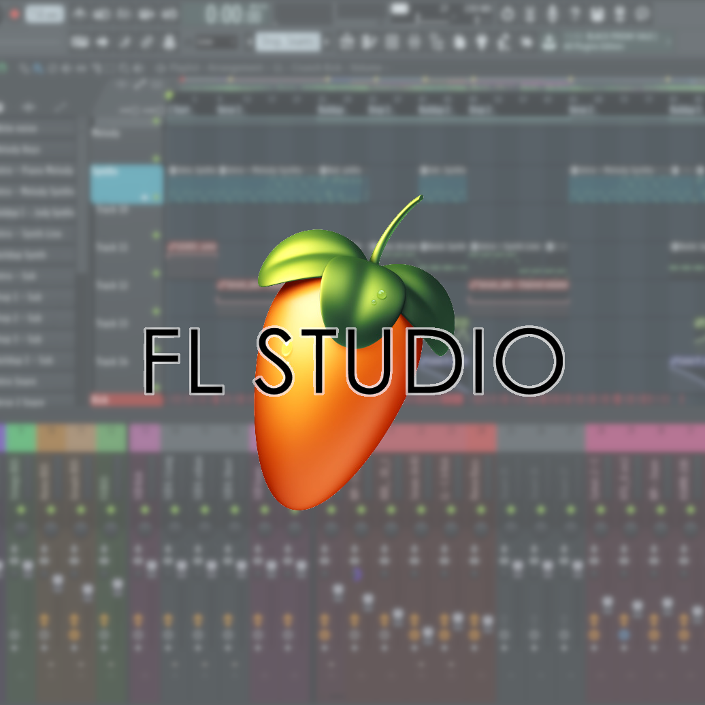

Producer DJ

Fruity Loops Studio
In 2016, I began teaching myself how to make music on Fruity Loops Studio when I started to feel that DJing was just not enough to express myself creatively. Creating music allows me to tell others how I'm feeling at the exact moment I'm in my studio.
Pioneer
I started DJing in highschool after hearing recorded live sets from big room DJs such as Hardwell, Bassjackers, and Afrojack. The way they were able to get a crowd jumping made me feel that there was no reason I couldn't either. I started off with a Nurmark Mix Track Pro II as a bedroom DJ. A few years later, I became the main EDM DJ for Cal State LA, playing live sets with my XDJ-RX2. From there I started learning how to scratch and to read a crowd. With a solid DJing foundation, I began my journey of music production.